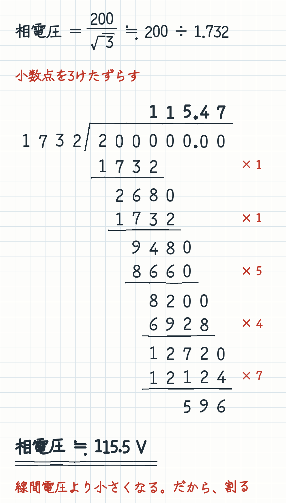

線間電圧と相電圧：√3 は、掛けるのか割るのか
三相交流の計算では、√3 がいろいろな式に出てきます。どこで掛け、どこで割るのかを、結線ごとに1つの決まりで見分けます。
先に答えY結線は、相電圧 ＝ 線間電圧 ÷ √3（電流はそのまま）。Δ結線は、線電流 ＝ 相電流 × √3（電圧はそのまま）。√3 が出るのは、2つの相の差を取る所だけです。
どこで止まるか
Y結線の負荷の1相にかかる電圧を、線間電圧のまま使ってしまう。線間電圧 200 V のとき、1相も 200 V として電流を出す。
結線ごとの決まり
| 結線 | 電圧 | 電流 |
|---|---|---|
| Y結線 | 相電圧 ＝ 線間電圧 ÷ √3 | 線電流 ＝ 相電流 |
| Δ結線 | 相電圧 ＝ 線間電圧 | 線電流 ＝ 相電流 × √3 |
√3 が出るのは、「2つの相の差を取る所」だけです。Y結線では、線と線の間に2つの相が入るので、電圧で差を取ります。Δ結線では、1本の線に2つの相の電流が出入りするので、電流で差を取ります。大きさが同じで 120° ずれた2つの量の差は、もとの √3 倍になります。
数値で確かめる
線間電圧 200 V の電源に、1相 10 Ω の抵抗をY結線でつなぐ
相電圧 ＝ 200 ÷ √3 ≒ 115.5 V
線電流 ＝ 相電流 ＝ 115.5 ÷ 10 ≒ 11.5 A
相電圧 ＝ 200 ÷ √3 ≒ 115.5 V
線電流 ＝ 相電流 ＝ 115.5 ÷ 10 ≒ 11.5 A

確かめの1問
同じ電源に、1相 10 Ω の抵抗をΔ結線でつなぐと、線電流は何 A ですか。
同じ電源に、1相 10 Ω の抵抗をΔ結線でつなぐと、線電流は何 A ですか。
答え
相電流 ＝ 200 ÷ 10 ＝ 20 A。線電流 ＝ 20 × √3 ≒ 34.6 A。Y結線の3倍になります。この計算を順を追って解く本：第3巻の案内
最終更新：2026年11月15日